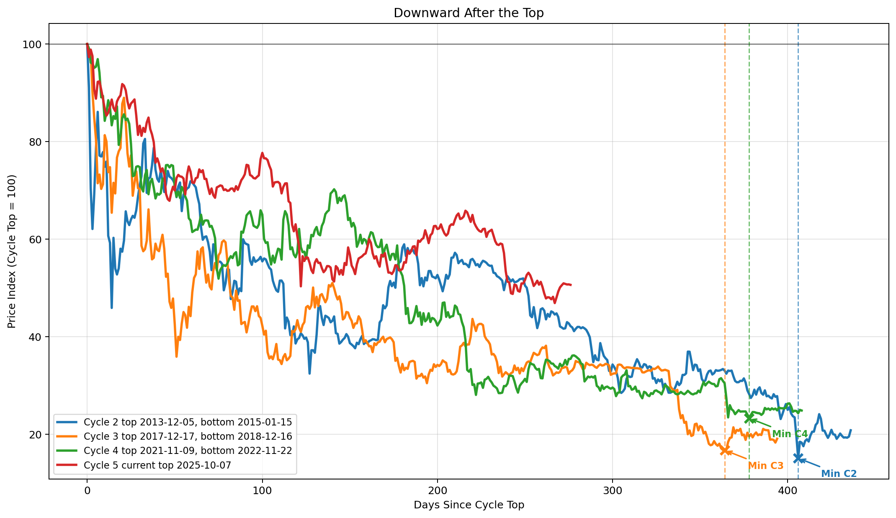
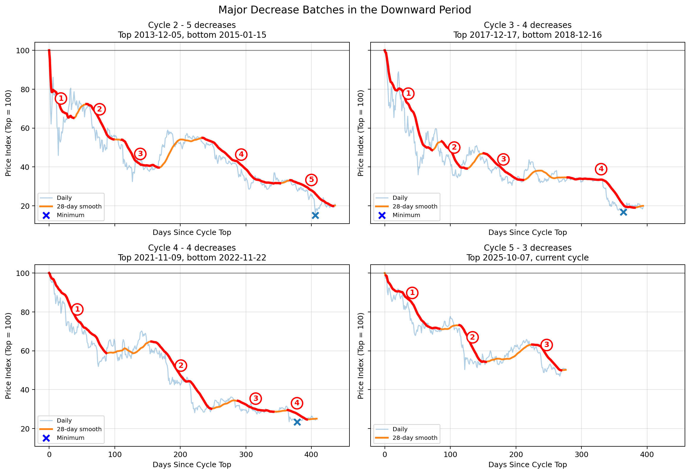

Bitcoin Downward Periods
These figures isolate the downward part of each Bitcoin cycle: the move from a cycle top to the following cycle bottom. Prices are normalized to the cycle top, making cycles with very different dollar prices directly comparable.
Downward After the Top
Each line begins at a cycle top indexed to 100. Dashed vertical lines and annotations mark the historical bottoms of completed downward periods.

Major Decrease Batches
The second figure separates the cycles and applies a 28-day moving average. Red numbered segments mark sustained decline batches detected by the same rule in every cycle.

Normalized scale
The cycle top is set to 100, so a value of 40 means price is 40% of the top, or a 60% decline.
Wave structure
Downward periods are not one continuous fall. They are built from sharp declines, rebounds, pauses, and renewed selling.
Current cycle
The latest cycle should be interpreted as incomplete until a later durable bottom is known.